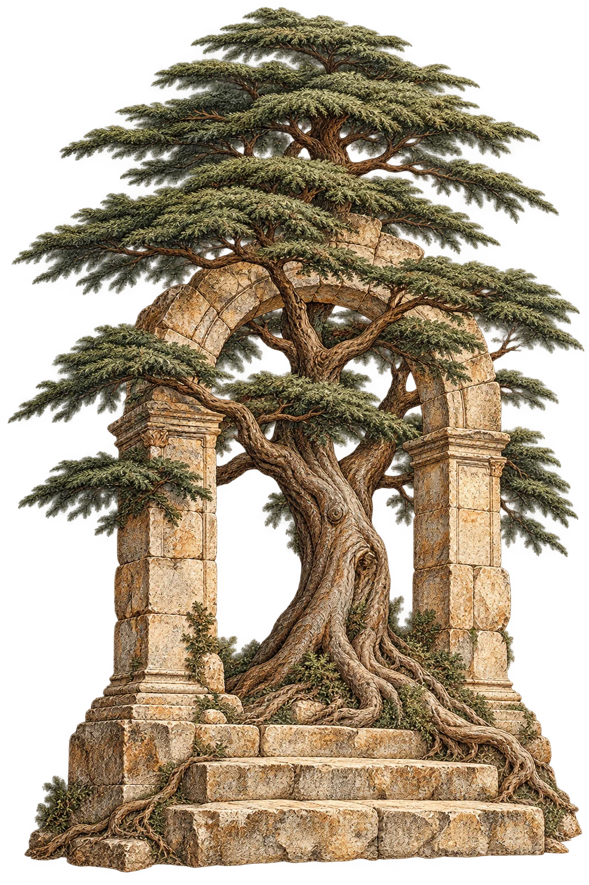

For your business.
Tell us what’s happening, what you’re hoping for, and what seems to be getting in the way. We’ll start there.
Say helloAn open invitation.
A missed opportunity. A working day that feels too heavy.
An idea still finding its shape.
Bring us the part you haven’t quite figured out.

There is more than one way in.